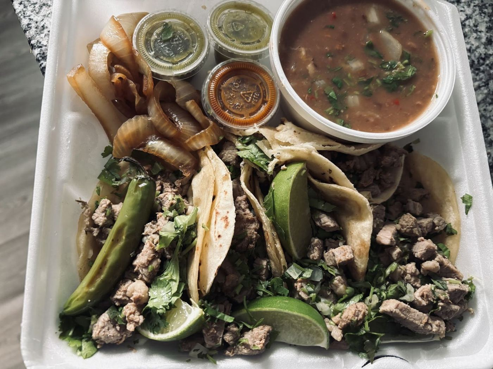

4.9★ tacos
“Everything was amazing!!! I tried several different options quesadillas, tacos birria, torta and every single item was delicious and tasted homemade! Place was ran by a sweet welcoming man! Would definitely go every chance I get!”
“Second time ordering from this taco truck and it’s soooo good!! Upon pulling up to the parking, I was greeted right away. The father and son were so friendly and welcoming, great service. I ordered quesa birria tacos, nachos with chicken and chorizo, and a…”
“Excellent customer service delicious food The only thing is the parking but beside that highly recommend 😌”
“I was really craving some street tacos, and these did not disappoint! The food was hot, fresh, and delicious. The gentleman who took and prepared my order was very friendly. I got 5 street tacos, charro beans, and an Agua Frescas for $13.50! I will definitely…”
“Husband and I enjoyed some delicious food here today! Tacos are delicious, as well as their rice and beans. Not to mention it is very fairly priced! The owner was so kind and inviting! Highly recommend this little gem! This was our second time here and won’t…”
“I am SO happy I found this place! Buckle in, I have a list of reasons I’m in love. 1) It’s hard to find a taco truck open past 6pm around here. I love that they are open later. 2) There is plenty of parking, shade and even a bit of outdoor seating. 3) When I…”
“Amazing food and service!!! Definitely we will be back soon!!! The “Aguas Frescas” are tasty and refreshing. “Chiles toreados”are the great spicy 🌶️ touch to their mild salsas.”
“Oh my gosh the tacos are GREAT! My husband and I ordered around 20 tacos one night for our family, since they are a few minutes from our house. We had never tried them before and WOW we love this place! The man who works there is so helpful and kind too!”